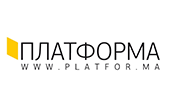

-

Сила идеи. Десять самых запоминающихся цитат TEDxKyiv-2013
15 июня в Украинском доме прошел TEDx Kyiv 2013 - «Инстинкт будущего». Проект объединил ученых, бизнесменов, культурных деятелей. Участники обсуждали проблемы ландшафтов Киева, детских роботов, подводное искусство, успех боли и многое другое. Фокус.ua подготовил 10 наиболее запоминающихся цитат спикеров
«Больше всего беззубых людей в США и Европе. В наших руках мобильные телефоны, планшеты, наши технологии идут вперед, но зубы мы носим, которые носил Дж. Вашингтон 220 лет назад» Ярослав Заблоцкий, сторонник инновационной стоматологии
Перейти до джерела -

Пітер Медсен: "Люди повинні перейматися спільною місією, а не тим, яку роль вони грають в ній"
У 2002 році звичайний інженер з Копенгагена власними руками побудував субмарину та представив її на розгляд публіки. Його зустріли з посмішкою, а про амбіційний проект швидко забули. У 2008 він повернувся з новою субмариною, цього разу – найбільшим у світі кораблем, що був створений конструктором-аматором. Люди нарешті сприйняли Пітера серйозно, а він приголомшив їх новою ідеєю, а саме – будівництвом космічного корабля. Сьогодні у команді Пітера – десятки ентузіастів. Неприбуткова організація Copenhagen Suborbitals приймає волонтерів з усього світу. Вони створюють, тестують, запускають ракети та паливні системи для першого любительського суборбітального космічного польоту людини. "Платформа" зустрілася з Пітером Медсеном на щорічній конференції TEDx Kyiv, де він виступив спікером.
Перейти до джерела -
Порція натхнення від українського TEDxKyiv. Лише вершки
Вже кілька днів не стихають розмови про унікальні ідеї та інновації, якими дивує TEDx. V конференція TEDxKyiv, або український Давос для оптимістів, відбулась 15 червня в Українському домі. Концепція 2013 — «Інстинкт майбутнього». Серед тем — взаємодія у соціумі, краща якість життя та освіти, технології та економічні підходи, що творять майбутнє.
TEDxKyiv об’єднує у спільному просторі науковців, бізнесменів та культурних діячів невипадково. Ціль — пошук нових горизонтів та планування життя особистості і країни на десятиліття вперед. Якщо інформаційний шум вас зачепив лише опісля події, то віртуальну порцію натхнення ви можете почерпнути із відео на офіційному сайті TEDxKyiv. А ми спробуємо підсумувати кращі виступи у цьому матеріалі.
Перейти до джерела -

На TEDxKyiv определили инстинкт будущего
На выходных в Киеве состоялась пятая независимая конференция TEDx, в этом году озаглавленная «Инстинкт будущего». TEDx – это научно-популярное событие, традиционно собирающее разномастную компанию спикеров перед не менее разномастной аудиторией. Общественные деятели, бизнесмены, изобретатели и исследователи, врачи и художники собираются, чтобы в коротких динамичных докладах представить публике идеи, которые помогут сделать мир лучше.
Перейти до джерела -
TEDxKyiv 2013: Фантастика, що поруч із тобою
Приватна обсерваторія... Ракети та субмарини для громадських подорожей... Картини, що пишуться під водою... Фантастика, що поруч із тобою. У Києві 15 червня 2013 р. пройшла конференція TEDxKyiv «Інстинкт майбутнього» — для людей, які не втратили спроможність мріяти і діяти.
Перейти до джерела -
Команда TEDxKyiv
-
TEDxKyiv "Підприємництво". Короткий конспект
Це великий успіх команди організаторів та помічників, що працювали майже три останніх місяці. Київський TEDx, принаймні з п'ятої спроби, пройшов на світовому рівні. Класні елементи дизайну, підбірка шрифтів та оформлення залу події - знов таки, не гірше ніж можна побачити на відео з TEDх-ів, які проходять в таких містах як Нью-Йорк або Берлін.
План, драматургія виступів вийшла досить якісною: в трьох блоках, було щонайменш по 2 ударних доповідача. Практично у кожному блоці - один живий англомовний виступ + відео англійською, що дозволило відчути подію, як частину глобального руху TED. Організатори серйозно попрацювали над якістю доповідей - всі спікери за день до виступів робили генеральну репетицію, з хронометражем та тренером, на сцені події в центрі "Майстер-Клас".
Ядро команди TEDxKyiv, що за власною ініціативою організували конференцію світового рівня.
Однак головне, це атмосфера натхнення, яку вдалося створити- я думаю, більшість присутніх отримали сильний імпульс зробити у бізнесі щось своє. І це, повторюся, великий успіх.
Перейти до джерела -
На Корреспондент.net идет онлайн-трансляция конференции TEDxKyiv
Талант. Образование. Развитие - это лейтмотив шестой конференции, которую организует сообщество TEDxKyiv по лицензии мировой платформы TED. Ежегодно в Лос-Анжелесе и Эдинбурге полторы тысячи человек, жаждущих прорывных идей и смелых открытий, собираются на конференцию "идей достойных распространения". Вместе с тем, во всех уголках мира проходят местные локальные события TEDx: от TEDxNASA в TEDxOdessa, от TEDxSiliconValley в TEDxNairobi, от TEDxKyiv в TEDxPerm.
Сообщество TEDxKyiv собирает украинских и зарубежных мыслителей всех сфер жизни, чтобы ответить на вопрос: Как превратить Украину в магнит для Таланта? Вместе с участниками они будут искать пути, на которых Талант и Образование становятся основой для роста, основой для развития общества, опорой его целостности и ориентиром в будущем.
Перейти до джерела -
TEDxKyiv 2010
"Новий Гарвард", "інтелектуальне дозвілля", "платформа для обміну ідеями", "освіта XXI століття" – це короткий перелік епітетів, які вживають сьогодні у всьому світі про конференції та спільноту TED. TED (Technology Entertainment Design) – це неприбуткова організація, присвячена ідеям, вартим поширення, яка щороку з 1984-го збирає на своїх конференціях тисячі людей, котрі "горять" ідеями та прагнуть ними поділитись.
За 26 років з "елітарного закритого клубу Кремнієвої долини" TED перетворився на спільноту людей різних професій та країн, які народжують та реалізовують ідеї сучасного та майбутнього. TEDxKyiv – це осередок глобальної мережі незалежно організованих TED-подій в 50-ти країнах світу. Організатори переконані, що в Україні є безліч ідей, вартих поширення, і значно більше людей здатних генерувати такі ідеї. Приєднуйтесь!
Перейти до джерела -
Конференция TEDxKyiv
-
TEDxKyiv 2011. Трансформационный бизнес
18 июня в культурном центре «Мастер Класс» прошла пятая конференция TEDxKyiv 2011. Юбилейная конференция была посвящена трем аспектам современного предпринимательства: трансформационным процессам, социальной ответственности бизнеса и примерам, когда понятие «бизнес» выходит за привычные рамки. В этой статье мы рассмотрим инновационную часть конференции.
С советских времен в нашем обществе все еще существует отрицательное отношение к предпринимательству, и главными задачами конференции, по словам ее модератора Романа Зинченко, являются преодоление негативных стереотипов о предпринимателе и популяризация предпринимательской деятельности в нашей стране.
Конференция TEDxKyiv порадовала своих участников рассмотрением необычных сторон предпринимательской деятельности и призвала к активному воплощению своих бизнес-идей в жизнь, ведь каждой из них найдется свое место — будь то ресторанный бизнес, социальный проект или архитектурное решение.
Перейти до джерела -
TEDxKyiv
We had a great opportunity to attend a really extraordinary conference last week – TEDxKyiv “Entrepreneurship”. My very first post at Green Forest blog was actually dedicated to TED. TED, which stands for Technology Entertainment and Design, is a global set of conferences held annually which promote brand new ideas and ground-breaking technologies. Besides these central conferences, TEDx conferences are becoming more and more popular. TEDx is an independently organized event in cities around the world. TED grants licenses to third parties to hold these events, however the rules of the franchise must be obeyed. In a nutshell, TEDx is a non-profit event organized by a group of enthusiasts who understand the meaning and value of TED and are ready to sacrifice their time and effort.
Перейти до джерела -
Ідеї, варті поширення
24 квітня в Будинку Учителя відбулася друга конференція TEDx “Краса розуму: ідеї для України”, на якій були озвученні не лише ідеї, варті поширення, а й результати їх втілення. Нагадаємо, що TED (абревіатура від англ.
Technology Entertainment Design; Технології, Розваги, Дизайн) – це щорічні конференції, які проводяться з 1984 в США. Місія - поширення унікальних ідей. Теми лекцій різноманітні: наука, мистецтво, дизайн, політика, культура, наука, глобальні проблеми, технології. Свого часу в список виступаючих потрапили такі відомі особистості, як колишній президент США Білл Клінтон, Нобелівські лауреати Джеймс Вотсон, Мюррей Гелл-Манн, засновник Вікіпедії Джиммі Вейлс, Боно (гурт U2), а також невідомі люди - носії вартісних ідей.
Перейти до джерела -
TEDx Киев: Наступила эра совместной работы
Для тех, кто не знает, что такое TED (Technology Entertainment Design): это такой формат публичных выступлений на 20-30 минут. Доклады на совершенно разные темы, объединенные тем, что это “Идеи, достойные распространения”. Интереснейшие выступления с русскими титрами можно посмотреть по этой ссылке.
Так вот, сегодня в “Доме учителя” на Владимирской проходил киевский TED. Сначала о том, что “на поверхности”. Организация вполне на уровне, особенно если учесть цену входного билета (200 грн). Отличное место, пристойные чай, кофе, и даже обед :) Спикеры выступали хорошо, а местами даже великолепно. Ярко различались те, кто “пиарился” (немного: пара-тройка докладчиков) и те, кто был действительно вдохновлен идеей, о которой рассказывал. Публика была, к сожалению, однородна: большая часть – или выпускники, или сотрудники, или “окружение” Киево-Могилянской Академии. Дух снобизма реально мешал общаться. Хотя, возможно, на первых этапах снобизм даже необходим для того, чтобы сформировать некую “элитарность” мероприятия.
Перейти до джерела